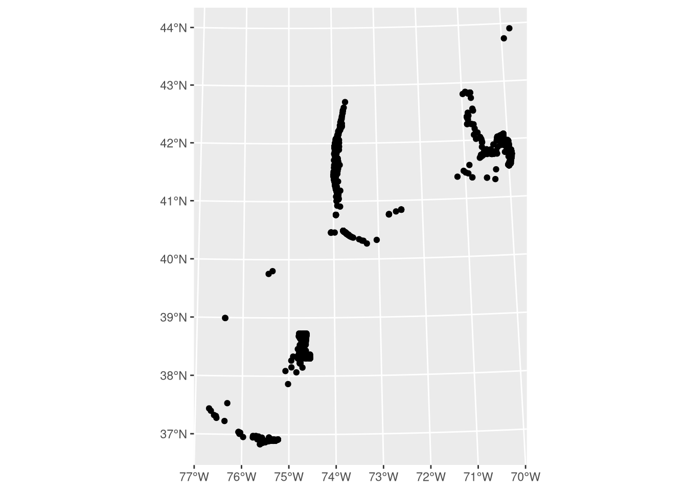
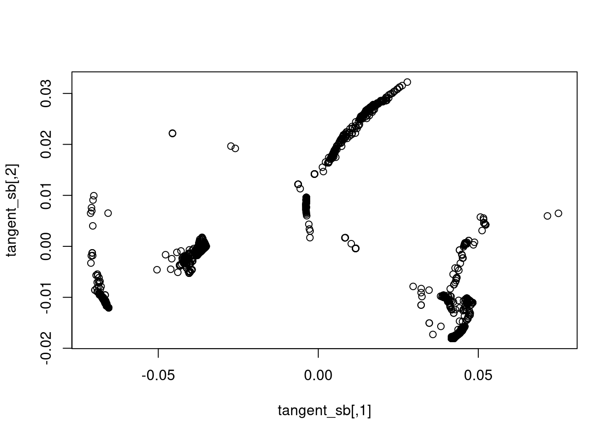
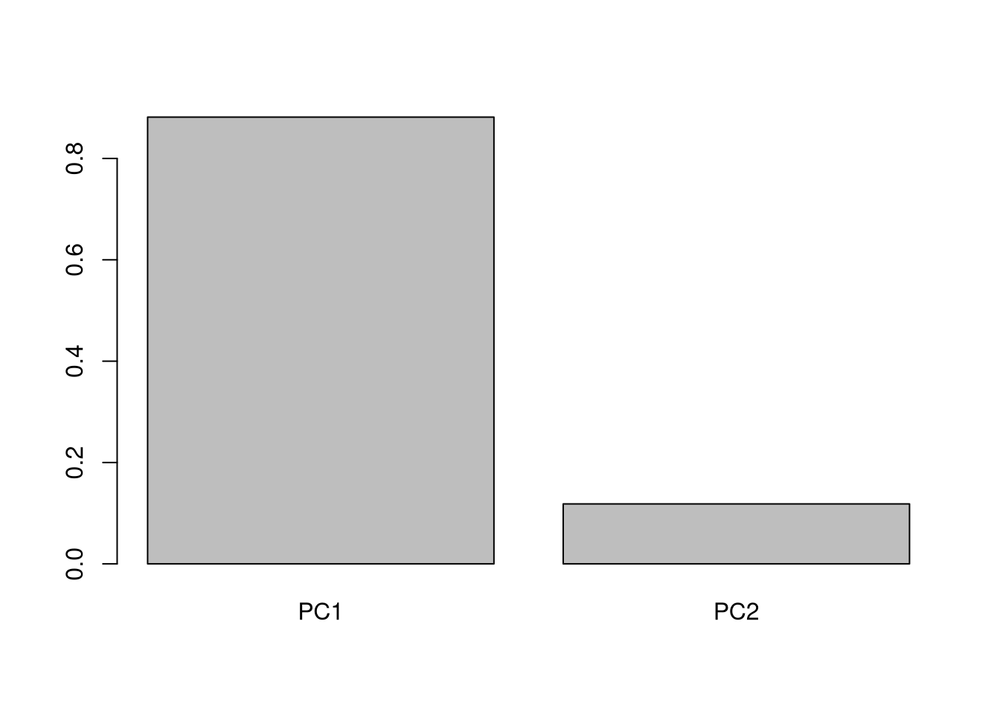
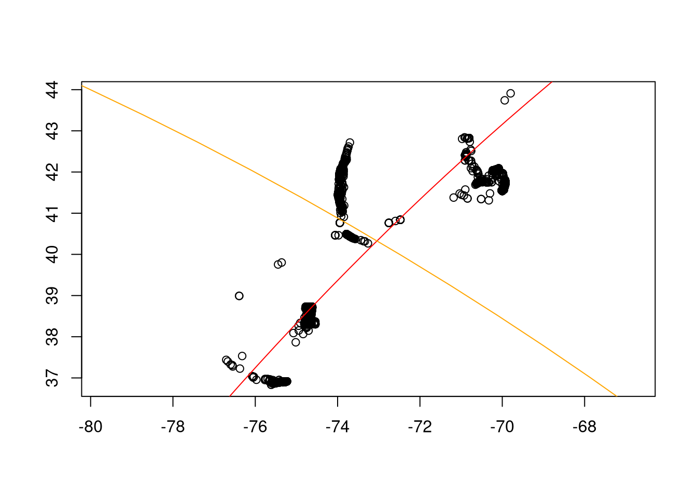
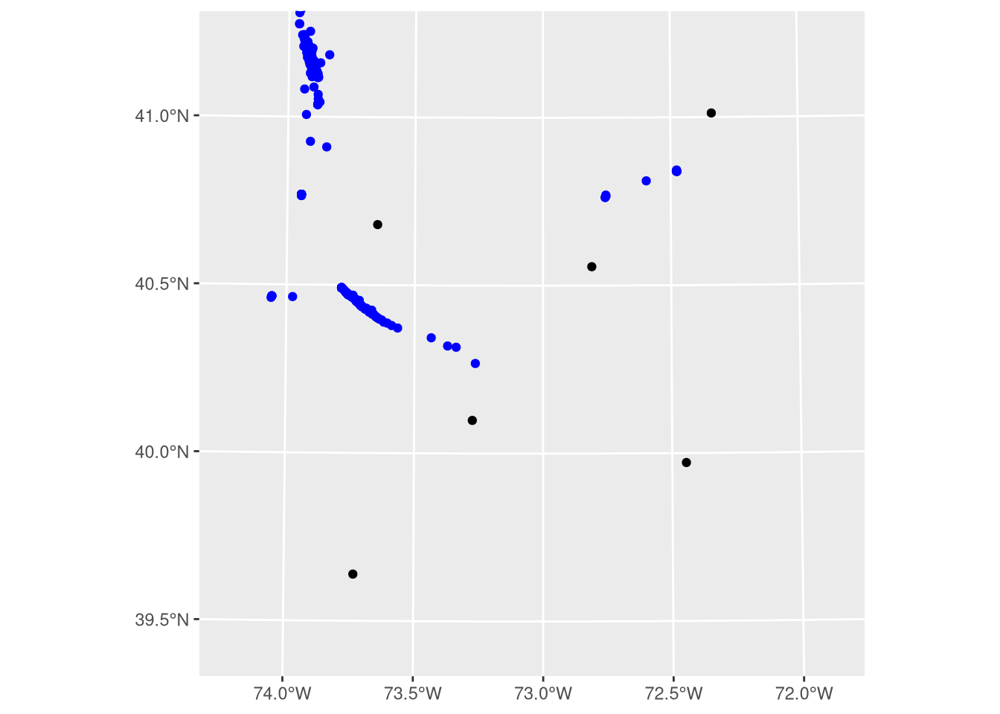
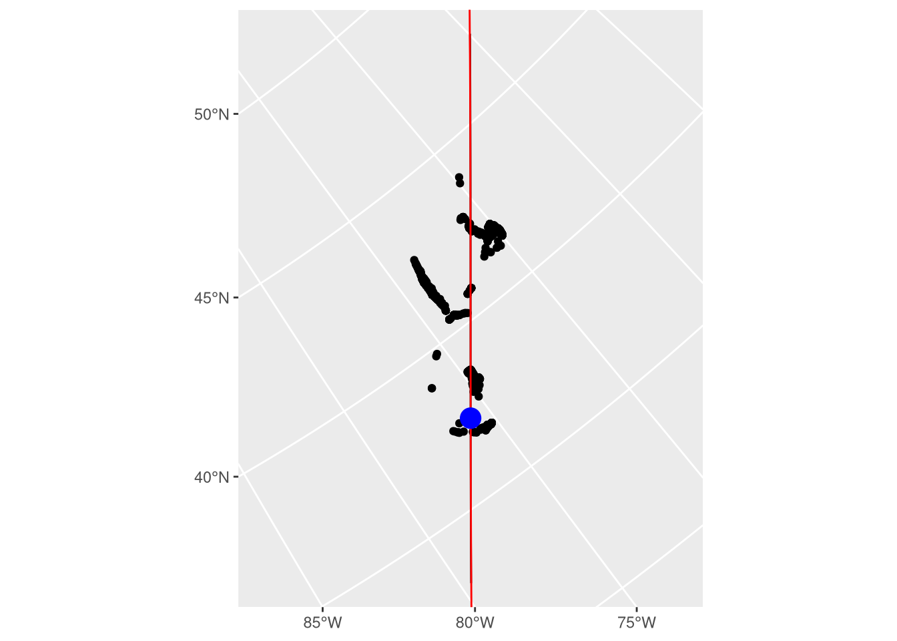

library(reticulate)
py_require("geomstats")2 Geodesic Regression
2.1 Geoid and Geodesics
- Explain geoid
- Imagine circle through the center of the Earth with the Earth’s radius
- Line from N pole to S pole through Greenwich, along the 0* meridian
- Continue from S pole to N pole along the 180* meridian
- Can transform this by changing the meridian (longitude), changing the poles (latitude), or both
- Explain geodesic
- Line along the surface of this circle
2.2 Geodesic regression
- Even here, we are projecting into Euclidean space to make math simpler
- Rienmannian manifolds – a way to express curvature
2.3 As it applies to ROSA project
2.3.1 Geodesic measure
- Convert lat/lon coordinates to unit sphere (S2 library)
- Assumptions and innacuracies here, however:
- spheres are well-defined Reinmanninan manifolds
- I have not found geoids (WGS84/GRS80) defined as Reinmanninan manifolds. I am unsure if this is because people have already tried it and it’s a dead end or if the math is just new.
- Assumptions and innacuracies here, however:
- Conduct geodesic regression to find best-fit geodesic through points
2.3.2 Comparisons
- Compare this line against least-squares fit in common “projections”: unprojected, Mercator, UTM (17-19), AEQD, gnomonic
3 Try crossing R/python
Set up python, make sure geomstats is installed
Import data
library(data.table)
library(sf)Linking to GEOS 3.14.1, GDAL 3.12.2, PROJ 9.7.0; sf_use_s2() is TRUElibrary(s2)
library(ggplot2)
sb <- fread(
"/run/media/obrien/OS/Users/darpa2/Analysis/OWF-flyways/data/joint_flyway_latitudes.csv"
) |>
_[species == 'striped bass']
# Viz in orthographic (globe) projection
sb |>
st_as_sf(coords = c("mean_lon", "mean_lat"), crs = 4326) |>
ggplot() +
geom_sf() +
geom_sf(data = st_sfc(st_point(c(-73.04283, 40.32766)), crs = 4326), ) +
coord_sf(crs = '+proj=ortho +lon_0=-75 +lat_0=32')
The Geomstats Hypersphere module prefers coordinates on the unit circle: X, Y, and Z values between -1 and 1. However, latitude and longitude coordinates are angles. So, we need to convert coordinates to the unit cirlce.
The s2 R package interfaces with the S2 C++ library. One of the shortcuts this library takes is to approximate the Earth as a unit sphere, which means it has a nice built-in function to convert coordinates to the unit sphere. This allows it to avoid a bunch of computationally-intensive trigonometric functions. I’ll convert the mean striped bass locations above to the unit sphere.
sb_s2 <- s2_lnglat(sb$mean_lon, sb$mean_lat) |>
as_s2_point() |>
# Geomstats package works best with matrices/arrays
as.matrix()First, import the Hypersphere submodule, create a 2 dimensional sphere, then confirm that the points above lie on that sphere.
gs <- import("geomstats.backend")
hypersphere <- import("geomstats.geometry.hypersphere")$Hypersphere
# need to use as.integer or reticulate will pass a float, which Hypersphere does not like
sphere <- hypersphere(dim = as.integer(2))
sb_s2 |>
sphere$belongs() |>
all()[1] TRUETo run a tangent PCA, which I currently believe is equivalent to a geodesic PCA but could be incorrect, we need to find a point on the sphere that the tangent plane will touch. The Geomstats walkthrough uses the Frechet mean.
frechet_mean <- import("geomstats.learning.frechet_mean")$FrechetMean
mean_fun <- frechet_mean(sphere)
mean_fit <- mean_fun$fit(sb_s2)
mean_estimate <- mean_fit$estimate_This corresponds to a lon/lat of:
frechet_mean_coord <- s2_point(
mean_estimate[1],
mean_estimate[2],
mean_estimate[3]
) |>
as_s2_lnglat()This is 4.5 km northwest of the point returned by averaging the lon/lat coodinates:
raw_mean <- s2_lnglat(mean(sb$mean_lon), mean(sb$mean_lat))
raw_mean<wk_xy[1] with CRS=OGC:CRS84>
[1] (-72.99653 40.30754)s2_distance(frechet_mean_coord, raw_mean)[1] 4518.149Now we’ll run a PCA on a tangent plane at this point.
tpca <- import("geomstats.learning.pca")$TangentPCA
tpca_mod <- tpca(sphere, n_components = as.integer(2))
tpca_mod$fit(sb_s2, base_point = mean_estimate)TangentPCA(n_components=2,
space=<geomstats.geometry.hypersphere.Hypersphere object at 0x7f7e701034d0>)# transform data onto tangent plane
tangent_sb <- tpca_mod$transform(sb_s2)
plot(tangent_sb)
The first principal component explains 88.2% of the variance.
exp_var <- tpca_mod$explained_variance_ratio_barplot(c(PC1 = exp_var[1], PC2 = exp_var[2]))
geodesic_1 = sphere$metric$geodesic(
initial_point = mean_estimate,
initial_tangent_vec = tpca_mod$components_[1, ] |> t()
)
geodesic_2 = sphere$metric$geodesic(
initial_point = mean_estimate,
initial_tangent_vec = tpca_mod$components_[2, ] |> t()
)
# for whatever reason I can't make this work with R's `seq`, so using the geomstats version
geodesic_1_pts <- geodesic_1(gs$linspace(-0.5, 0.5, as.integer(100))) |>
# creates a 1*100*3 matrix that should be 100*3. Drop removes the empty dimension, giving 100*3
drop()
g1_s2 <- s2_point(
geodesic_1_pts[, 1],
geodesic_1_pts[, 2],
geodesic_1_pts[, 3]
) |>
as_s2_lnglat()
geodesic_2_pts <- geodesic_2(gs$linspace(
as.integer(-1),
as.integer(1),
as.integer(100)
)) |>
drop()
g2_s2 <- s2_point(
geodesic_2_pts[, 1],
geodesic_2_pts[, 2],
geodesic_2_pts[, 3]
) |>
as_s2_lnglat()These are XYZ on the unit circle. Use S2 to convert them to lat/lon and visualize.
plot(s2_lnglat(sb$mean_lon, sb$mean_lat), col = "black")
plot(g1_s2, add = T, type = 'l', col = 'red')
plot(g2_s2, add = T, type = 'l', col = 'orange')
ggplot() +
geom_sf(
data = st_as_sf(sb, coords = c("mean_lon", "mean_lat"), crs = 4326),
color = 'blue'
) +
geom_sf(data = st_as_sf(g1_s2)) +
geom_sf(data = st_as_sf(g2_s2)) +
coord_sf(
xlim = c(-1e5, 1e5),
ylim = c(-1e5, 1e5),
crs = paste0(
'+proj=aeqd +lon_0=',
s2_x(frechet_mean_coord),
' +lat_0=',
s2_y(frechet_mean_coord)
)
#OMERC
# crs = paste0('+proj=omerc +gamma=-39 +lonc=',s2_x(frechet_mean_coord), ' +lat_0=', s2_y(frechet_mean_coord))
)
4 Try AEQD then PCA
Project through the Frechet mean
sb_sf <- st_as_sf(
sb,
coords = c("mean_lon", "mean_lat"),
crs = 4326
) |>
st_transform("+proj=aeqd +lon_0=-73.04283 +lat_0=40.32766")
pca <- prcomp(st_coordinates(sb_sf))
rng <- predict(pca, st_coordinates(sb_sf))[2, ] |> range()
pca1_sf <- cbind(
seq(-1e6, 1e6, length.out = 100),
rep(0, 100)
) %*%
t(pca$rotation) |>
as.data.frame() |>
st_as_sf(
coords = c("X", "Y"),
crs = "+proj=aeqd +lon_0=-73.04283 +lat_0=40.32766"
) |>
st_combine() |>
st_cast("LINESTRING")
ggplot() +
geom_sf(data = pca1_sf) +
geom_sf(data = sb_sf) +
geom_sf(
data = st_as_sf(g1_s2) |>
st_combine() |>
st_cast("LINESTRING") |>
st_transform("+proj=aeqd +lon_0=-73.04283 +lat_0=40.32766"),
col = 'red'
) +
geom_sf(
data = (c(-400e3, 0) %*%
t(pca$rotation) |>
st_point() |>
st_sfc(crs = "+proj=aeqd +lon_0=-73.04283 +lat_0=40.32766")),
col = 'blue',
size = 5
) +
coord_sf(
xlim = c(-7.7e5, 7.7e5),
ylim = c(-9.9e5, 9.9e5),
crs = '+proj=omerc +gamma=-37.8845 +lonc=-73.04283 +lat_0=40.32766'
)
#-73.04283 40.32766 -> geomstats
#-72.99675 40.30782 -> geosphere
#-72.99653 40.30754 -> raw meanc(1e3, 0) %% t(pca$rotation) > atan2(614.0718, 789.2501)180/pi [1] 37.88451 > atan2(789.2501, 614.0718)*180/pi [1] 52.11549